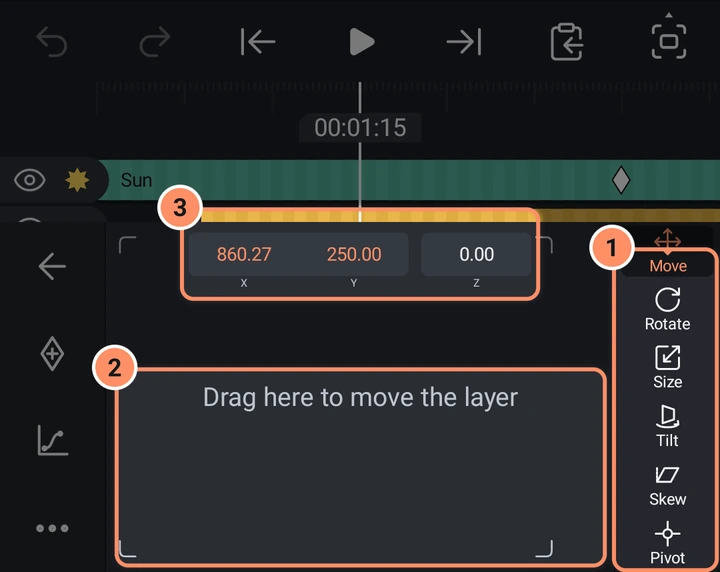

レイヤーツール
レイヤーを選択すると表示されるツールのグリッドと、その背後にある各パネルです。
レイヤーをタップすると、画面下にツールのグリッドが開きます。最初の行には5つの小さなボタン（速度、トリムと分割、音量）があり、詳しくはタイムラインで説明しています。再生ヘッドの位置で使えないトリムまたは延長ボタンは、まったく表示されません。その下には大きなボタンが並び、表示されるボタンはレイヤーの種類によって変わります。
大きなボタンは2ページに分かれています。グリッドを横にスワイプするとページを切り替えられ、下にある2つのドットで今どのページにいるかがわかります。1ページしかないレイヤーにはドットは表示されません。

| レイヤー | ツール |
|---|---|
| 図形、写真、動画 | 塗りと色、枠線と影、不透明度、トランスフォーム、図形オプション、プリセット、エフェクト |
| パス図形（ペン、SVG、多くの図形） | 同じツールですが、図形オプションの代わりにポイントを編集があります |
| テキスト | 同じツールですが、図形オプションの代わりにテキストを編集があります |
| 描画 | 同じツールですが、図形オプションの代わりに描画を編集があります |
| グループ | 塗りと色、枠線と影、不透明度、トランスフォーム、プリセット、エフェクト。アセットにリンクされたグループにはアセットのプロパティも表示され、背景を削除（動画）で作成した動画の切り抜きには切り抜きの縁も表示されます |
| ヌル | トランスフォーム、プリセット、エフェクト |
| カメラ | カメラオプション、トランスフォーム、エフェクト、プリセット、カメラの動き |
| 3Dモデル | モデルオプション、不透明度、トランスフォーム、プリセット、エフェクト |
| 音声 | プリセット、エフェクト（ボイスフィルターを含む）、AI（ノイズを低減、自動キャプション） |
写真や動画は画像の塗りを持つ長方形なので、図形と同じツールがあります。
表には1ページ目を載せています。2ページ目には、3Dモデルを除く、目に見えるすべてのレイヤー（図形、テキスト、描画、グループ、写真、動画）のクロップがあります。動画クリップには、そこにさらに4つのボタン、AI、自動キャプション、逆再生、スクリーンショットがあります。音声、カメラ、ヌル、3Dモデルのレイヤーは1ページだけです。 写真の2ページ目にもAIがあります。

すべてのパネル
ほとんどのパネルでは、左側の細い列に4つのボタンがあります：戻る、キーフレームを追加またはキーフレームを削除、イージング、そしてトランスフォームとエフェクトのみその他です。灰色のキーフレームボタンは、その設定をアニメーションできないことを意味します。詳しくはキーフレームとイージングをご覧ください。
数値ボックスをタップすると数値パッドが開きます。最初のタップで値全体が選択されるので、入力すると置き換わります。チェックマークをタップすると適用され、外側をタップするとパッドが閉じます。ルーラー（目盛りと中央の針がある帯）は、横にドラッグすると数値が変わります。
トランスフォーム
右側のタブ：移動、回転、サイズ、傾き、スキュー、ピボット。カメラには移動、回転、サイズだけがあります。ツールのトランスフォームを長押しするか、その他を開くと、基本コントロール（移動、回転、サイズ、スキュー、デフォルト）と詳細コントロール（6つすべてのタブ）を切り替えられます。
- 移動。トラックパッド（「ここをドラッグしてレイヤーを移動」）とX、Yのボックスがあります。Zをタップすると、レイヤーを奥行き方向に移動できます。レイヤーがキャンバスや別のレイヤーと揃うと、細い赤いガイドが表示されます。
- 回転。ダイヤルです。ノブをドラッグして回すか、度数をタップして入力します。レイヤーが3Dで傾いているときは、このタブが3Dトラックパッドになり、1本指で傾け、2本指でひねります。
- サイズ。幅と高さのボックスと、比率を保つリンクボタン（デフォルトでオン）があります。カメラでは、このタブで画角が変わります。リンクの状態はレイヤーごとに記憶され、プロジェクトと一緒に保存されます。また、ルーラーはフリックした後も慣性で動き続けます。
- 傾き。3Dの傾き用に、度単位のX軸回転とY軸回転があります。詳しくはカメラレイヤーと3Dをご覧ください。
- スキュー。度単位のXスキューとYスキューがあります。
- ピボット。レイヤーが回転や拡大縮小するときの中心点で、レイヤーの中央からのピクセル値で指定します。XとYを入力するか、トラックパッドをドラッグするか、9つの四角から角、辺、中央をタップするか、キャンバス上のマーカーをドラッグします。レイヤーと子レイヤーの位置は変わりません。
- その他には、位置をリセット、回転をリセット、スケールをリセット、3D回転をリセット、傾きをリセット、ピボットをリセット、トランスフォームをリセット（6つすべて）があります。

移動は位置を表し、X、Y、Zがまとめてアニメーションします。回転、サイズ、傾き、スキュー、ピボットにはそれぞれ独自のキーフレームがあり、幅と高さはサイズのキーフレームを共有します。
クロップ
写真、動画、その他の目に見えるレイヤーには、ツールグリッドの2ページ目にクロップボタンがあります。切り取られる部分が暗くなり、8つのハンドルがあるフレームが表示されます。角や辺をドラッグしてクロップするか、フレームの内側をドラッグして移動します。2本指操作では引き続きキャンバスをズームできます。自由、1:1、4:5、3:4、16:9、9:16は、その形で最大の中央クロップに合わせ、ドラッグ中もその形を保ちます。辺をタップして値を入力でき、リセットでクロップが解除され、完了でパネルが閉じます。キーフレームボタンは4辺をまとめてキーフレーム化します。クロップはクロップエフェクトなので、エフェクト内でも角丸とぼかしで変更できます。レイヤーの位置は変わりません。

塗りと色
上部のタブ：なし、色、グラデーション、メディア。
- 色。14個のスウォッチ、その後に保存済みの色が並びます。上部のバーには色が#RRGGBBと不透明度で表示され、+をタップすると現在の色を保存できます。3つのボタンがあります：スポイト（プレビューをタッチして色を取得）、カラースライダー、フルカラーピッカー（カラーホイール、または16進数フィールド付きのHSVとRGBスライダー）。
- グラデーション。線形、放射状、スイープから選び、開始色と終了色を指定します。プレビュー上の2つのハンドルでグラデーションを移動できます。グラデーションの色はちょうど2色です。
- メディア。図形やテキストレイヤーの文字を写真や動画で塗りつぶします。タップするとピッカーが開きます。

キーフレーム化できるのは、色タブの色だけです。
枠線と影
3つのタブ：ストローク、枠線、影。
- ストロークは図形の輪郭です。スイッチ、色、サイズ、線の端の形状と結合方法、開いた線の両端のスタイル（矢印、円、ひし形など）があります。
- 枠線では、枠線をいくつでも重ねられます。各枠線にはサイズ、色、位置（内側、中央、外側）があります。グリップをドラッグして順序を変更できます。枠線を追加で1つ追加できます。
- 影にはスイッチ、色、サイズ、アルファ、位置（XとY）があります。
不透明度
パーセントボックス付きの不透明度スライダーと、7つのグループに分かれた28種類のブレンドモードがあります：通常、暗くする（乗算、暗くする、より暗く、カラー焼き込み、リニア焼き込み）、明るくする（スクリーン、明るくする、より明るく、カラー覆い焼き、リニア覆い焼き）、コントラスト（オーバーレイ、ソフトライト、ハードライト、ソフトオーバーレイ、ビビッドライト、リニアライト、ピンライト）、差（差の絶対値、排他、減算、除算）、色（色相、彩度、カラー、輝度）、マスク（マスク、除外）。グループをタップして開き、モードをタップすると適用されます。マスクは、このレイヤーがある部分だけ下の内容を残します。除外は、このレイヤーがある部分の下の内容を取り除きます。
図形オプション
図形の形を決める設定で、それぞれ1行にルーラーと値ボックスがあります。例：円にはサイズ、角丸長方形にはサイズと半径、多角形には辺の数、半径、角度、星には点の数、外側の半径、内側の半径、角度、矢印には始点、終点、尾の幅、頭の幅、頭の長さがあります。選択中の行が、キーフレームボタンでアニメーションする対象です。写真と動画ではここでサイズを設定します。
ポイントを編集、描画を編集、テキストを編集
これらをタップすると全画面エディターが開きます。詳しくは図形、描画、マスクとテキストとフォントをご覧ください。
カメラオプションとモデルオプション
詳しくはカメラレイヤーと3Dをご覧ください。
音量
音声と動画で使用します。詳しくは音声をご覧ください。
AI、自動キャプション、逆再生、スクリーンショット
この4つのボタンは、動画クリップのグリッドの2ページ目にあります（GIFも動画として扱われます）。AIはエフェクトライブラリのAIカテゴリを開きます（音声レイヤーでは、唯一のページに同じボタンがあります）。自動キャプションはこのクリップだけのキャプションを作ります。AIツールをご覧ください。逆再生はクリップを逆向きに再生します。メディアをご覧ください。 写真の2ページ目にも背景を削除するためのこのボタンがあります。
スクリーンショットは、再生ヘッド位置のクリップのフレームを、元のフルサイズの画像として保存します。エフェクト、クロップ、枠線、レイヤーの位置は含まれませんが、トリム、速度変更、逆再生は反映されます。画像はスマートフォンのギャラリー（Pictures/AbsentMotion）に保存され、クリップの上に新しいレイヤーとして追加されます。10秒以内にそのレイヤーを削除すると、ギャラリーからも画像が削除されます。再生ヘッドはクリップ上に置いてください。
エフェクトとプリセット
詳しくはエフェクトを使うとアセット、テンプレート、プリセットをご覧ください。